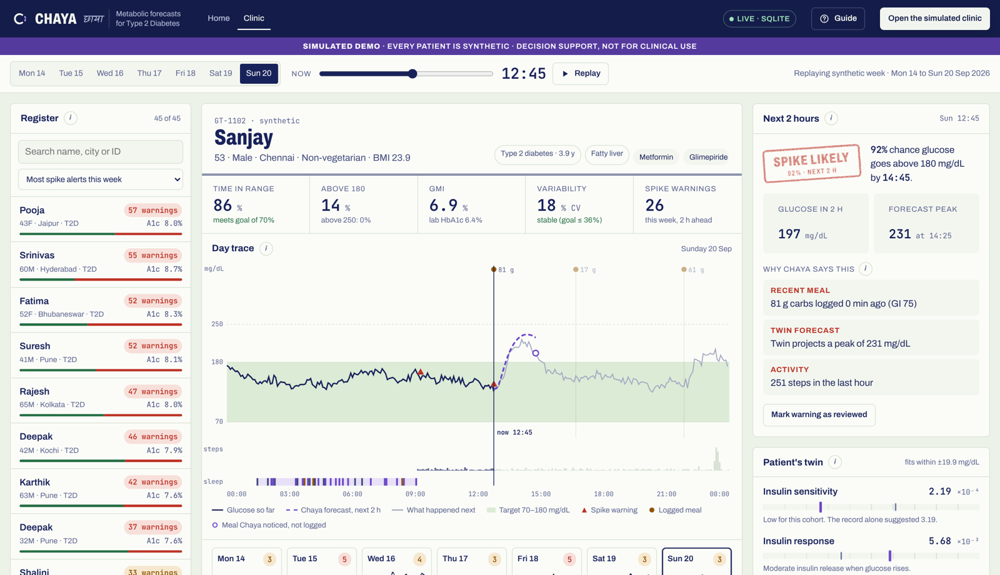

See the spike two hours before it happens.
Chaya builds a twin of each patient's metabolism from their health record and wearables. It forecasts glucose two hours ahead, explains every warning, and shows which advice keeps the patient in range.
45 synthetic patientsNo sign-inBuilt for the Happiest Health Digital Twin Challenge 2026
One week to learn the body. Every 15 minutes after that, a forecast.
Chaya reads the health record, watches seven days of wearable data to tune a physiological model to this patient, then runs that model two hours ahead of the real one.
Read the record
HbA1c, fasting glucose, BMI, medicines and TCF7L2 genotype give a first estimate of how this body handles sugar.
FHIR R4 · LOINC · SNOMEDLearn the body
Seven days of CGM, meals, steps, sleep and doses tune five personal parameters, including insulin sensitivity and how strongly the pancreas responds.
Extended Bergman model · MAP calibrationForecast and advise
The twin runs beside the live CGM, catches meals nobody logged, flags spikes two hours early with reasons, and tests advice before the doctor gives it.
Twin + LightGBM · SHAP reasons
One screen answers who, why and what to change.
The clinic is laid out like a case file: the register on the left, the case sheet in the middle, the forecast and Rx pad on the right.

Tested on 45 patients it had never seen.
Trained on 105 synthetic patients, scored on 45 held back, using only days 8 to 14 after a week of learning. Numbers below come straight from reports/metrics.json.
| Test | Result | Comparison | Flag |
|---|
Built for Indian bodies and Indian plates.
Indians live with diabetes, and 136 million more with prediabetes.
of calories in Indian diets come from carbohydrates, so the after-meal spike is the daily problem.
regional dishes in the meal library, from idli-sambar to ragi mudde, plus late dinners, chai and festival sweets.
Decision support, written in pencil.
Chaya suggests where to look and what might help. The doctor decides.
- Synthetic data onlyNo real patient appears anywhere, in line with the DPDP Act 2023 and the challenge's sandbox rules.
- A clinician in the loopNo dosing. Every warning shows its reasons and the twin's projection.
- Fewer, merged alertsBack-to-back warnings become one episode, about four per patient a day, and the threshold is adjustable.
- Ready for consented recordsHealth records are read as FHIR R4, so ABDM-consented data can replace the synthetic set later.